댄싱컵 × 브랜드라이즈
9월 신메뉴 — 리서치 & 홍보 방안
PART 1 리서치 — 국내 레퍼런스·발화 → 해외 레퍼런스 → 오트 활용 / PART 2 홍보 방안 — 축 배정·제작 기준·타임라인
9월 세 자리
흑임자·쑥은 쑥임자 — 고소함 / 오트딥은 바꿔 마시기
셋을 한 라인으로 묶지 않습니다 · 고르는 동기가 전부 다릅니다
PART 1
리서치
국내 레퍼런스·발화 → 해외 레퍼런스 → 오트 활용
일곱 줄
읽을 시간이 없으면 여기까지
| # | 신호 |
|---|---|
| 01 | 해외 검색 급등 · 국내 무반응 — 옐프 흑임자 말차 +147% / 국내 보도는 "대중적 유행 아님" |
| 02 | 저가 프랜차이즈 상시 라떼 공백 — 확인된 국내 출시가 전부 겨울·봄 시즌 한정 |
| 03 | 흑임자 = 검정 — 옐프 +147% · 푸드인스티튜트 "2026년의 컬러는 블랙" |
| 04 | 쑥 = 말차보다 꼬소하고 은은하고 카페인 없음 — 노트가 볶은 쌀·풋아몬드 계열 |
| 05 | 묶는 말은 고소함 — 딥라떼 "꼬소하다"부터 오트·흑임자·쑥까지 같은 단어 |
| 06 | 오트의 현재 단계 = 토핑 상품 — 해외는 콜드폼까지, 국내는 아직 옵션 |
| 07 | 금지 어휘 — 식물성·비건·효능 — 메가커피 표기 철회 선례 |
소재 ①
흑임자 — 비어 있는 상시 자리
해외 신호는 강하고, 국내 수요는 아직입니다
흑임자 말차라떼 검색
+147%
옐프 · 2023→2025
흑임자 라떼 검색
+23%
같은 기간
국내 판매 카페
일부 상권
성수 · 망리단길
역신호국내 1차 보도는 "대중적인 유행은 아니다"로 못 박습니다. 큐그레이더 인용 — "시그니처로 파는 카페들이 꾸준한 정도"

공차 · 2026.01
흑백밀크티 4종
셰프 협업 · 흑임자 vs 소금 대결. 맛이 아니라 편 고르기를 화제로 만들었습니다

더카페 · 2025.12
흑임자 크림라떼
겨울 4종 중 1종. 흰 크림 위 흑임자 가루 — 회색 마블이 이 소재의 표준 화면

할리스 · 2026.07
블랙샷 라떼
'2026 컬러는 블랙'을 인용해놓고 재료는 연유·에스프레소 — 색만 빌렸습니다
이미지 = 각 사 보도자료 · 출처는 하단 인덱스
더카페 컷의 하단 고지
"생성형 AI를 통해 연출" — 7월 댄싱컵 광고에서 AI 소재가 실사에 CPC 2.2배로 진 그 조건입니다
동기 ①
덜 단 게 결점이 아니라 이유
"마라탕·매운 라면 등 자극적인 맛의 반작용으로 심심한 맛이 뜬다" — 유통업계 인용
"달기만 한 케이크보다 덜 달아도 건강한 맛" · 26세 직장인
"달기만 한 케이크보다 덜 달아도 건강한 맛" · 26세 직장인
동기 ②
블랙푸드 — 탈모 · 항산화
세사민 · 안토시아닌 · 비타민E. 효능을 알고 사러 옵니다
"탈모에 관심이 많아 흑임자 효능을 알고 있었다" · 재구매 의향 블로그
"탈모에 관심이 많아 흑임자 효능을 알고 있었다" · 재구매 의향 블로그
동기 ③
부모와 같이 먹을 수 있는 유일한 축
"젊은 세대가 부모님과 디저트를 먹으려면 선택지가 없다" — 프랜차이즈 관계자
"엄마와 나 모두를 취저했다 · 예전엔 취향이 갈려 갈등" · 26세
"엄마와 나 모두를 취저했다 · 예전엔 취향이 갈려 갈등" · 26세
동기 ④
추억이 아니라 처음 먹는 맛
"MZ세대가 경험하지 못했던 새로운 재료" — 소비자학 교수
노스탤지어로 프레이밍하면 동기를 잘못 짚는 것
노스탤지어로 프레이밍하면 동기를 잘못 짚는 것
투썸 쑥·흑임자 라떼
20만잔
출시 1개월 · 2020
스타벅스 흑임자 케이크
13만개
출시 보름 · 2022
롯데마트 흑임자 식품
+38.5%
2021 · 전년 대비
국내에서 흑임자가 안 팔린 적은 없습니다. 저가 프랜차이즈 상시 라인에 안 들어왔을 뿐
좋다고 할 때
"그냥 라떼도 고소한데 고소함의 끝"
블로그 · 2020-11
"흑임자 맛 적절하고 고소하고 부드럽다"
리뷰 플랫폼
"토속적인 음료 좋아하는 사람에게 추천"
리뷰 플랫폼
화낼 때
"입자가 너무 텁텁해 목에 걸린다"
블로그 · 2026-05
"시럽 단맛이 지나쳐 커피 맛을 가린다"
블로그 · 2026-05
"흑임자 향이 뒤로 밀린다 · 주연이 헷갈린다"
리뷰 기사 · 2026-01
불만 셋이 전부 농도와 질감입니다 — 걸린다 · 시럽이 이긴다 · 흑임자가 안 보인다
소재 ②
쑥 — 봄에 묶인 판매 언어
확인된 프랜차이즈 출시가 전부 3~4월입니다

백미당 · 2026.04
우리 쑥 3종
포스터 첫 줄이 "봄의 향기 듬뿍 담은" — 출시 근거를 계절에 두고 있습니다
- 백미당 2026년 4월 · 국내산 쑥 제철
- 스타벅스 2025년 봄 · 쑥 팥 생크림 롤
- 개인 카페 상시 · 서울 종로·신사 할매니얼 상권
- 이디야 2026년 2월 · 거문도쑥 라떼 전국 출시 — 봄 시즌 3종으로
동기 ①
말차의 대체제
"말차도 좋지만 봄에는 쑥 라떼도 취향 저격"
30대 여성 · 커뮤니티 2026-03
30대 여성 · 커뮤니티 2026-03
동기 ②
구분되는 향
"누구나 쉽게 구분할 수 있는 향 — 브랜드 정체성에 유리"
디저트 업계 평가 · 2026-05
디저트 업계 평가 · 2026-05
동기 ③
한정성
"그 시기를 지나면 사라지는 식재료" — 이게 매력이자 9월의 문제
진입 장벽쑥은 쓴맛과 섬유질이 먼저 걸립니다. "쑥떡은 섬유질이 많아 뻣뻣하거나 쌉싸름해 선뜻 고르기 주저" — 보도 인용. 흑임자보다 거부감 구간이 넓습니다
좋다고 할 때
"은은한 쑥향에 고소하면서 달달한 맛"
매거진 · 2024-03
"쫀득한 쑥떡과 크림이 어우러진다"
매거진 · 2024-03
화낼 때
"쑥크림을 바르는 시늉만 했다"
블로그 · 2025-03
"쑥향이 미약 · 다시 먹을 일 없을 듯"
블로그 · 2025-03
쑥은 덜 넣으면 바로 들킵니다. 가격이 높을수록 양에 대한 판정이 가혹해집니다
소재 ③
오트 — 표기에 선례가 있다
시장은 커지는 중이고, 사고는 성분·값에서 납니다
글로벌 오트밀크 시장
46억달러
2026 · 2033년 137억 전망
연평균 성장률
16.8%
2026→2033
카페랩 공급 카페
+64%
2026 · 전년 대비

탐앤탐스 · 2025.12~
오트 콜드브루 · 디카페인
전용 메뉴로 세웠습니다. 200개 중 60개점 · 층 분리 화면이 오트 라떼의 문법

메가커피 · 2023.01
우유 변경 옵션 +500원
키오스크에 노출된 제품이 서울우유 귀리우유 — 여기서 표기 문제가 터졌습니다
| 항목 | 사실 |
|---|---|
| 초기 문구 | "부담 없는 칼로리의 식물성 음료" |
| 실제 제품 | 유당분해우유 50% · 6곡 혼합분말 40% |
| 쟁점 | 원유가 들어가 대체유가 아님 |
| 대응 | 2개월 만에 '식물성' 삭제 → '식이섬유가 풍부한 음료' |
좋다고 할 때
"생각보다 고소하고 맛 괜찮다"
커뮤니티 · 2025-06
"일반우유보다 오트 넣은 게 더 낫다"
커뮤니티 · 2026-04
"산미를 해치지 않으면서 부드럽다"
업계 매체 · 2025-07
화낼 때
"500원 더 냈는데 속은 기분"
보도 인용 · 2023-10
"추가금 500원 800원 안 받게 보편화되면"
커뮤니티 · 2025-06
"당 함량 때문에 진짜 가끔만 먹어야 한다"
커뮤니티 · 2026-04
긍정 발화의 어휘가 "고소하다"입니다 — 7월 딥라떼 X 후기의 "꼬소하다"와 같은 말
국내 소구점 부재
여기까지가 국내 자료 · 흑임자·쑥은 팔 언어가 안 나옵니다
국내에서 확인된 것
시즌 한정 · 계절 언어
- 흑임자 = 겨울·빙수 시즌 한정으로만 등장
- 쑥 = 확인된 출시가 전부 3~4월
- 판매 언어가 '봄의 향기'·'겨울 크림'에 묶임
- 저가 프랜차이즈 상시 라인 = 0건
→
그래서 본 것
해외 카페의 취급 방식
- 같은 재료가 계절 없이 상시 메뉴로 붙어 있음
- 파는 근거가 계절이 아니라 색·질감
- 한국 카페 문법이 역수입된 구조
- 9월 출시에 쓸 언어가 여기에 있음
국내 1차 보도는 "대중적인 유행은 아니다"로 씁니다 — 그래서 해외를 봤습니다
해외 레퍼런스 ①
해외 흑임자 — 젖은 콘크리트색
계절이 아니라 색으로 팝니다 · 미국·영국·호주 카페
흑임자 말차라떼 검색
+147%
옐프 2026 트렌드 보고서
흑임자 라떼 / 디저트
+23% · +21%
같은 기간
흑임자 음료 검색
+30%
구글트렌드 · 최근 1년
푸드인스티튜트 — "2026년의 컬러는 블랙" · 뉴욕·시애틀 카페 중심
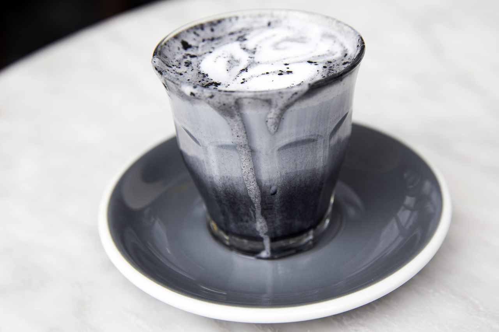
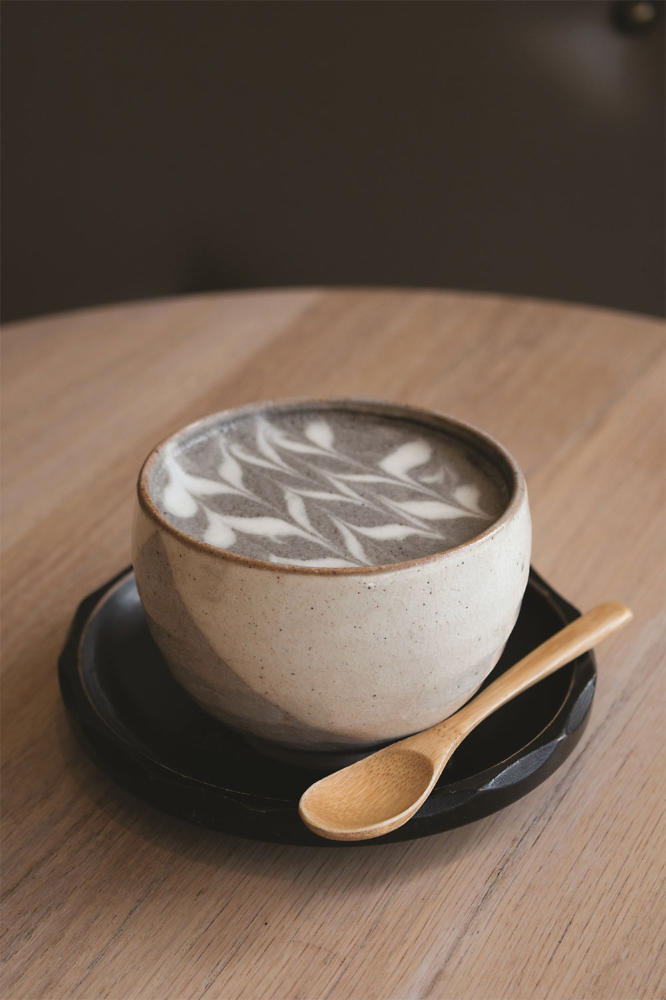
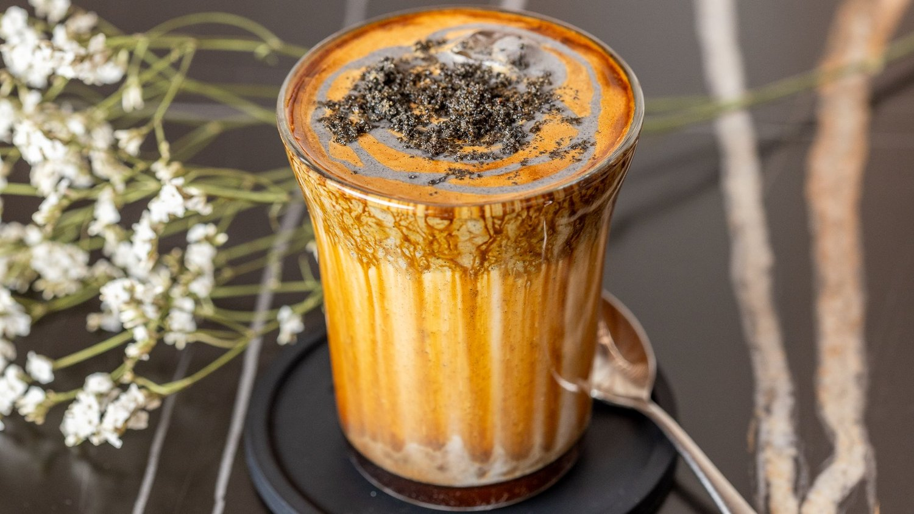
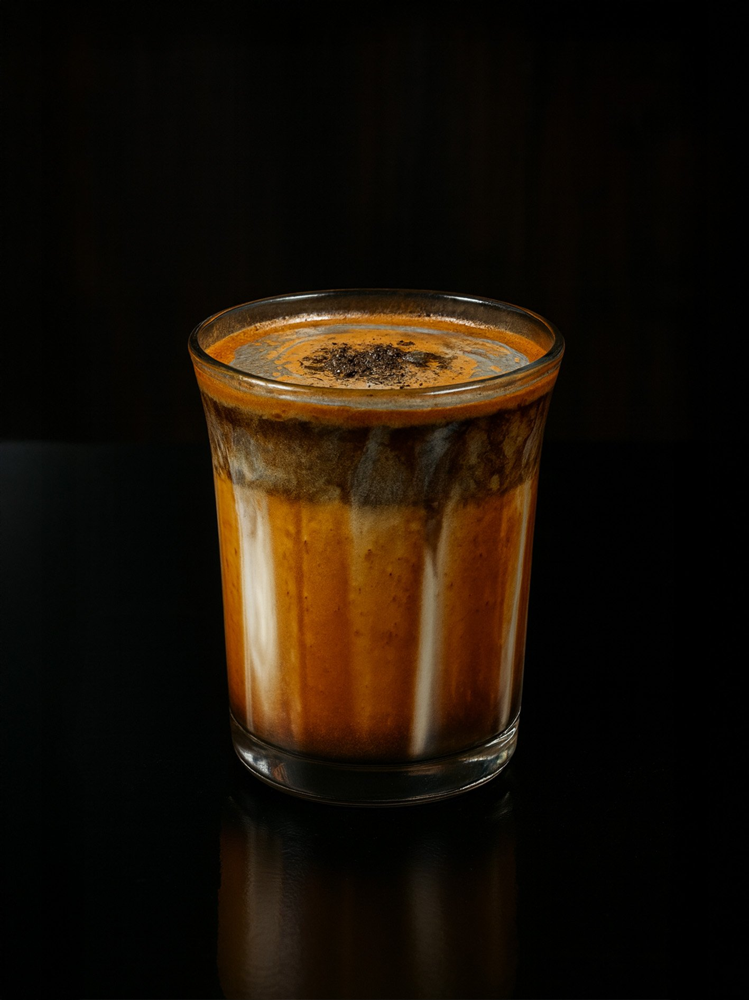
이미지 = 각 카페·매체 공개 자료 · 출처는 하단 인덱스
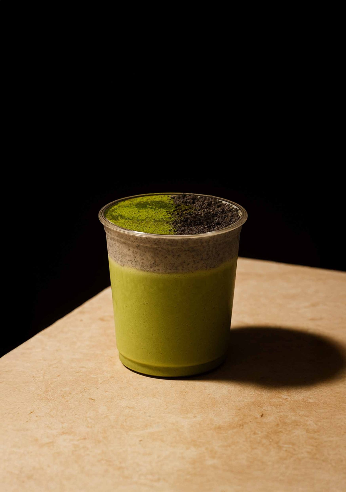
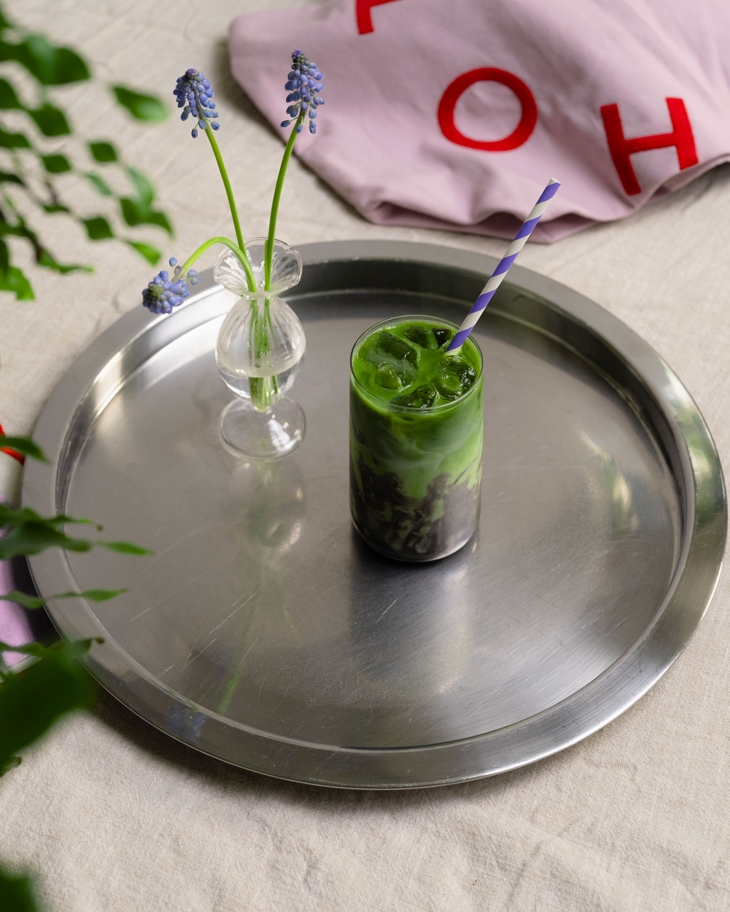
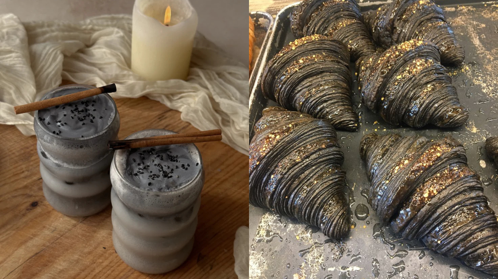
| 카페 | 지역 | 메뉴 · 방식 |
|---|---|---|
| Kahii | 시드니 | Black Sesame Cloud — 리스트레또 + 흑임자 크림 + 찬 우유. 한국 커피 문화에서 착안했다고 직접 밝힘 |
| GAIL's | 런던 | 아이스 참깨 말차 블랙 라떼 — 2026 봄 메뉴 |
| Café Kitsuné | 뉴욕 | 피스타치오 밀크 흑임자 라떼 — 대체유와 조합 |
| Kitaro | 브루클린 | 밀크셰이크처럼 걸쭉한 농도로 승부 |
| Tatte Bakery | 미국 | 흑임자 + 타히니 + 소금 한 꼬집 — 가을·겨울 메뉴 |
| Black Fox Coffee | 뉴욕 | 참깨 오트밀크 차이 — 흑임자와 오트를 한 잔에 |
| Nana's Green Tea | 미국 | 흑임자 라떼 플로트 약 7달러 — 매장 확장 중 |
이 문법을 만든 게 한국 카페입니다. 보도 인용 — "한국 카페에서는 흑임자 베이스에 우유와 에스프레소를 넣고, 흑임자 휘핑크림이나 가루를 뿌린다". 영국 SNS 키워드는 '한국식 흑임자 라테'·'포스트 말차'
역수입 구조입니다. 댄싱컵은 원래 문법을 가진 쪽에 서 있습니다
해외 레퍼런스 ②
해외 쑥 — 말차보다 나은 세 가지
꼬소함 · 은은한 향 · 카페인 없음
① 꼬소함
쌉쌀함 대신 고소함
Leef(뉴욕) 표기 노트가 볶은 쌀·풋아몬드
Maison Boseong 따뜻한 건초·헤이즐넛
말차는 풀향·감칠맛 계열 — 겹치지 않음
Maison Boseong 따뜻한 건초·헤이즐넛
말차는 풀향·감칠맛 계열 — 겹치지 않음
② 은은한 향
구분되는데 세지 않음
"누구나 쉽게 구분할 수 있는 향 — 브랜드 정체성에 유리"
국내 발화 "은은한 쑥향에 고소하면서"
국내 발화 "은은한 쑥향에 고소하면서"
③ 카페인 없음
저녁에도 마십니다
Lysée·Leef 모두 표기에 명시
'카페인프리' 검색 +329%
업계 비교 — "말차는 아침, 쑥은 저녁"
'카페인프리' 검색 +329%
업계 비교 — "말차는 아침, 쑥은 저녁"
말차를 대신하는 게 아니라 말차가 못 하는 시간대와 입맛을 가져갑니다
말차 경매가
+265%
전년 대비 · 우지 부족 지속
일본 쑥 출하량
754톤
2025 사상 최고 · 재배 1.5배
선점 여지
넓음
업계 표현 — "아직 거의 아무도 안 가졌다"
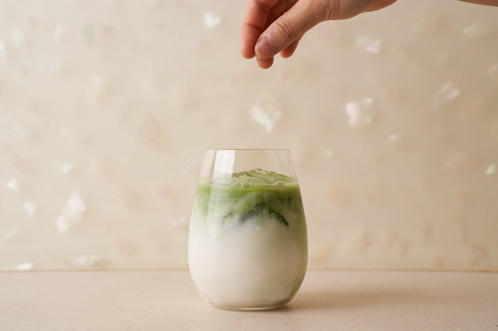
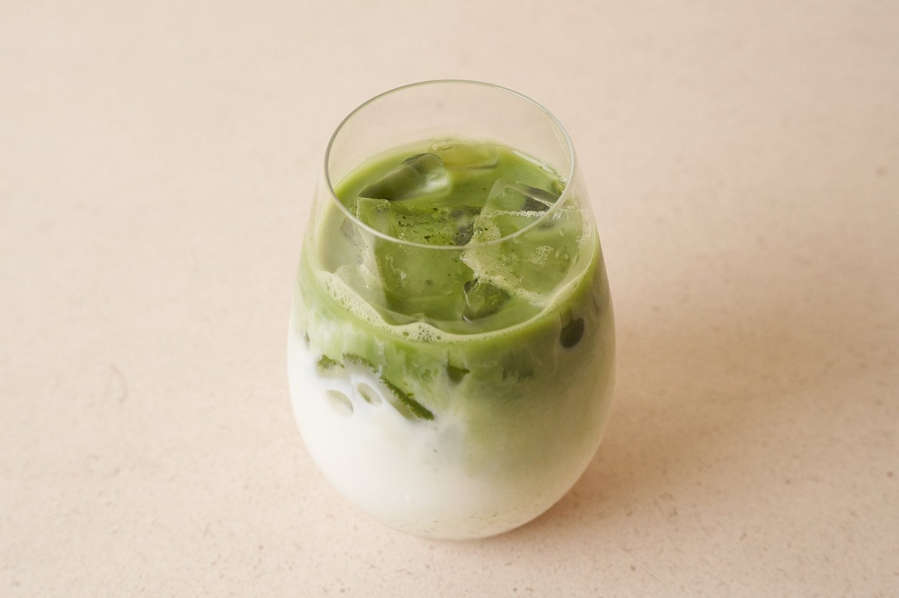
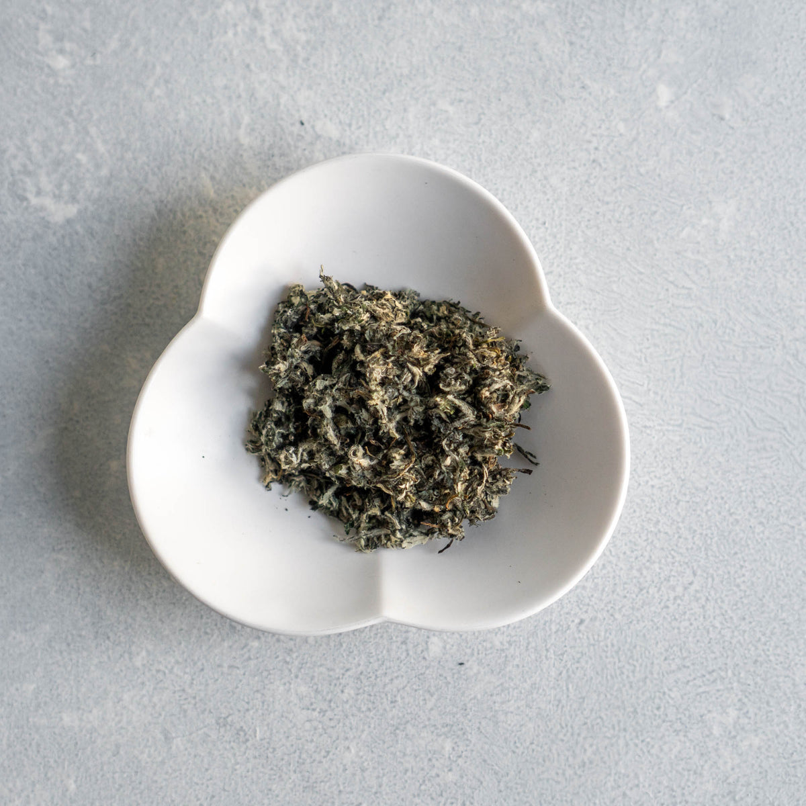
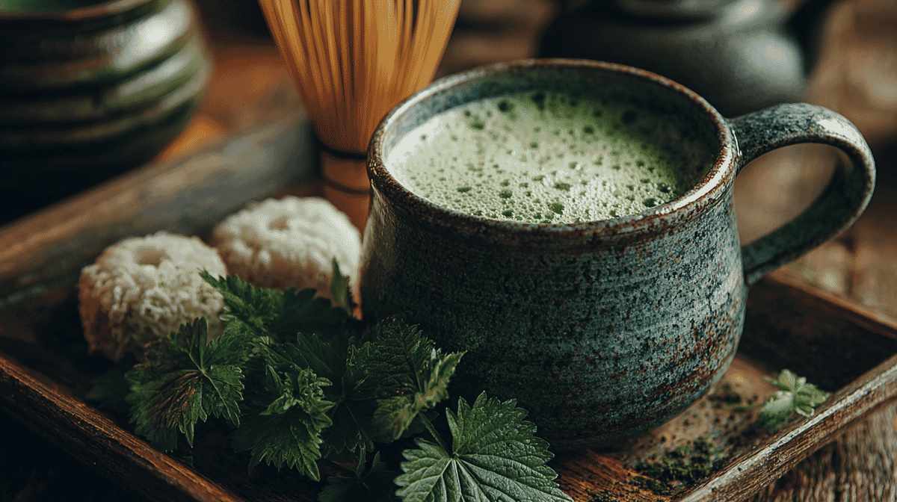
이미지 = 각 카페·매체 공개 자료 · 출처는 하단 인덱스
| 카페 | 지역 | 메뉴 · 방식 |
|---|---|---|
| Lysée | 뉴욕 | Artemesia Latte — 하동산 쑥 + 오트 또는 우유 + 말돈 소금. 소개 문구가 "우리 식의 말차" · 카페인 없음 |
| Leef | 뉴욕 | Artemisia Matcha — 하동산. 노트를 볶은 쌀·풋아몬드·세이지로 표기 |
| Cafe de Mama | 뉴욕 | Green Herb Mochi Latte 6.5달러 — 쑥 크림 + 모찌 꼬치. 말차를 섞은 버전은 7.5달러 |
| 요모기 전문 카페 | 일본 나가하마 | 쑥만으로 라떼·경단·과자를 채운 단일 소재 매장 |
| Center Coffee | 서울 | 쑥 라떼를 오래 상시로 유지 — 해외 매체가 기준점으로 인용 |
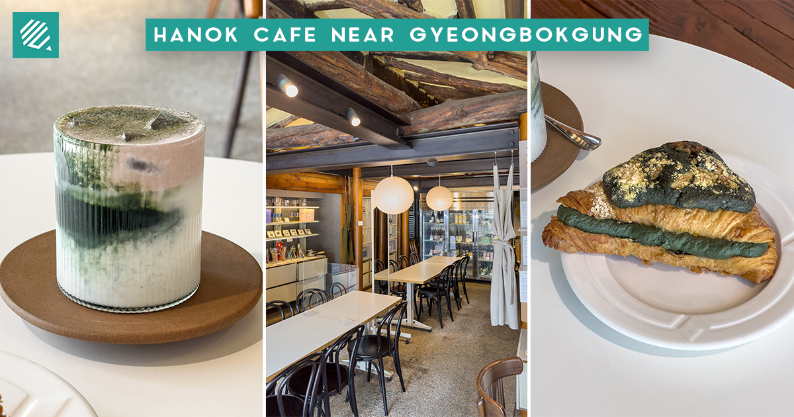
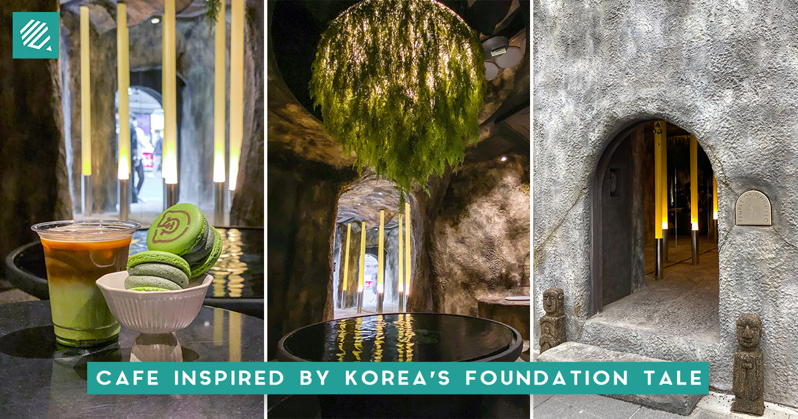
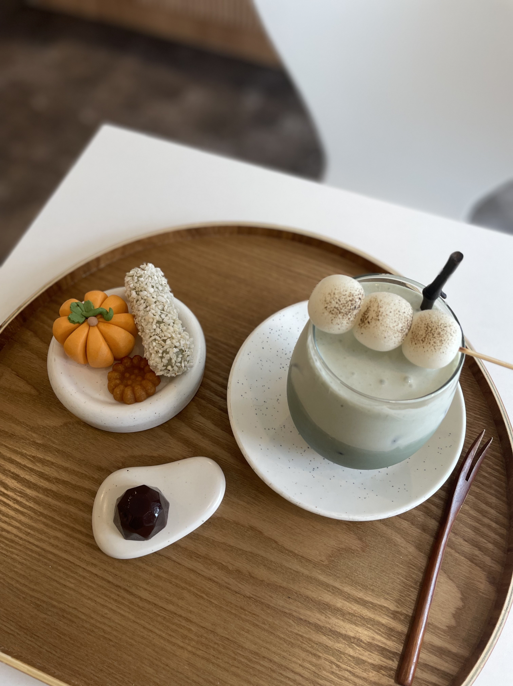
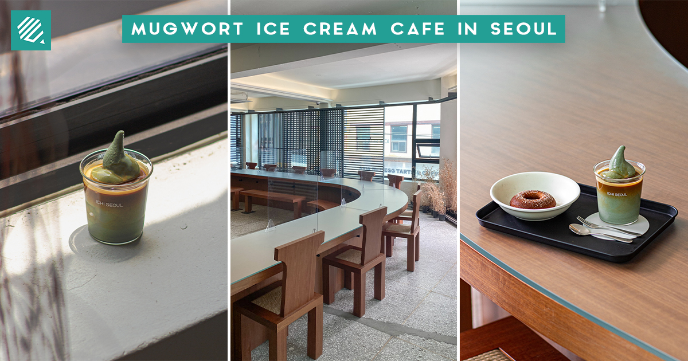
이미지 = 각 매체 공개 자료 · 출처는 하단 인덱스
이디야가 2026년 2월 거문도쑥 라떼를 전국 출시했습니다 — 봄 시즌 3종으로
강점 ①
적은 양으로 진한 초록
말차보다 적게 넣어도 색이 납니다
일본 업계 인용 · 2026-05
일본 업계 인용 · 2026-05
강점 ②
우유와 잘 붙음
오트밀크가 더 조밀하고 오래가는 폼을 만듭니다
쑥 라떼 제법 가이드 · 2026-03
쑥 라떼 제법 가이드 · 2026-03
강점 ③
붙일 곳이 넓음
한식·양식·중식 어디에나 페어링됩니다
같은 자료
같은 자료
국제 'mugwort latte' 대화는 한국 쑥이 이미 갖고 있습니다. 일본 요모기가 뒤따라 붙는 구도 — 매체 표현으로 "따라잡는 쪽"
해외·국내 레퍼런스 ③
오트 활용 — 옵션에서 메뉴로
우유 변경 옵션에서 시작해 전용 메뉴·토핑까지 갔습니다
| 브랜드 | 시점 | 방식 · 결과 |
|---|---|---|
| 스타벅스 | 2021.09 | 자체 개발 오트밀크를 기본 옵션에 편입 · +600원, 카드결제 무료. 콜드브루 오트라떼는 6개월 120만잔 |
| 폴바셋 | 2022.02 | 어메이징 오트 바리스타 — 무상 변경. 오트·소이·락토프리 3종 |
| 이디야 | 2023.03 | 옵션 추가 후 8개월 만에 변경 건수 +31% |
| 투썸·커피빈·더벤티 | 2021~ | 오트 활용 메뉴 운영 |
| 메가커피 | 2023.01 | 표기 문제로 '식물성' 문구를 2개월 만에 철회 — 회피할 선례 |
국내 대체유 시장 6,942억(2021) → 1조 전망(2026) — 유로모니터
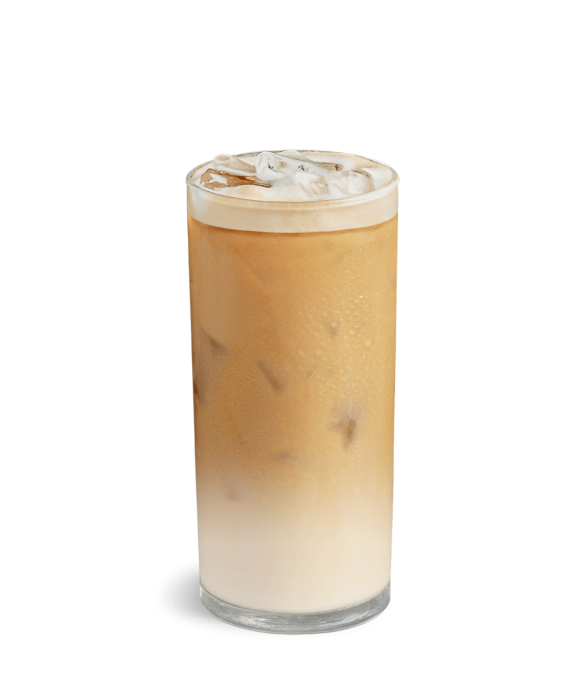
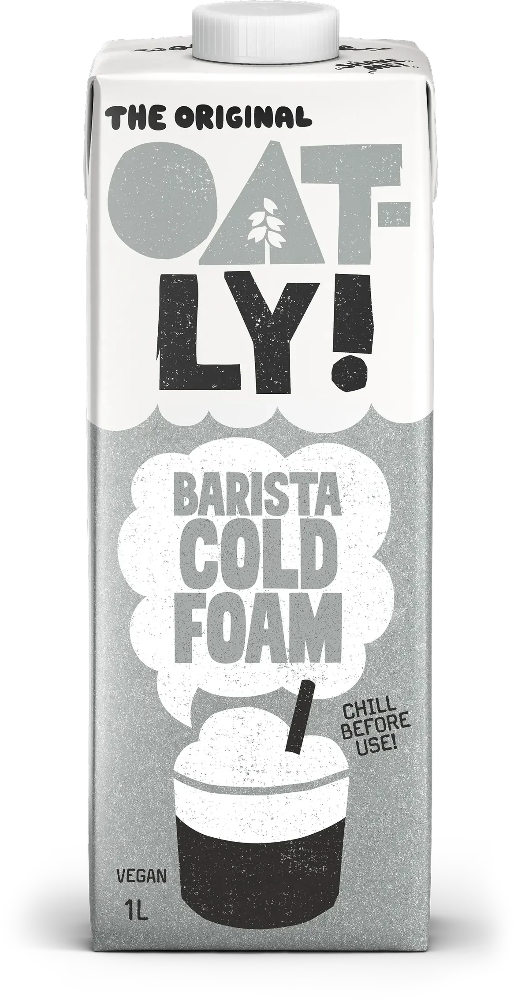
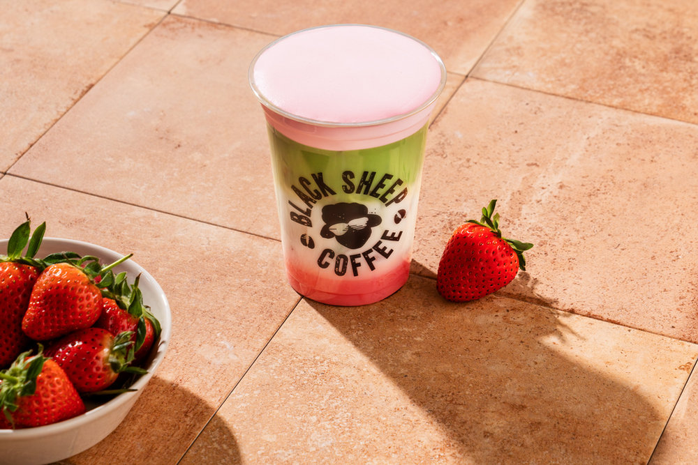
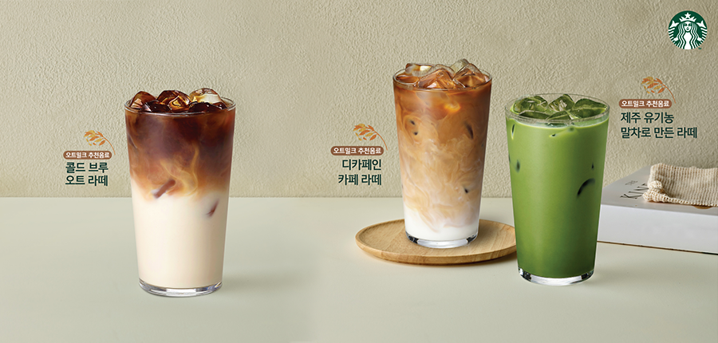
이미지 = 각 브랜드 공개 자료 · 출처는 하단 인덱스
| 형태 | 사례 |
|---|---|
| 우유 대체 | 스타벅스·폴바셋·이디야 — 옵션 변경 |
| 전용 메뉴 | 탐앤탐스 오트 콜드브루 · Black Sheep 아이스 바닐라 오트라떼(미국 메뉴 5위) |
| 기본값 | Blank Street — 오트를 기본으로 두고 우유를 선택으로 내림 |
| 콜드폼 토핑 | Oatly 바리스타 콜드폼 · 폼 유지 약 1시간 · 사전 제조 냉장 8시간 |
| 다른 재료와 결합 | Black Fox 참깨 오트밀크 차이 — 흑임자 × 오트 |
스타벅스 2026년 2분기 콜드폼 매출 +40%. 오트는 '대체'가 아니라 토핑·질감 상품으로 이동 중입니다
가을 정석 — 밤 · 고구마
흑임자·쑥의 가을 슬롯은 비어 있고, 검증도 안 돼 있습니다
| 브랜드 | 시점 | 가을 소재 |
|---|---|---|
| 투썸플레이스 | 2025.09 | 꿀 고구마 라떼 · 홍시 주스 — '제철코어' |
| 메가MGC커피 | 2024 가을 | 공주 알밤 — 밤밤 찰떡 프라페 |
| 더카페 | 2024.09 | 밤 라떼 2종 — 자체 밤 파우더 |
| 더카페 | 2025.10 | 옥수수 라떼 · 말차 콜드브루 |
| 카페인중독 | 2025.11 | 꿀고구마 3종 — 라떼·크림라떼·와플 |
가을에 확인된 흑임자·쑥 출시는 없습니다. 흑임자는 겨울·빙수, 쑥은 봄에 몰려 있습니다
인사이트 넷
리서치에서 나온 것만 · 실행 판단은 PART 2
01
자리가 비어 있고, 수요도 아직 안 왔다
저가 프랜차이즈 상시 흑임자 라떼가 없는 것과, 국내에서 안 떴다는 것은 같은 사실의 양면입니다.
02
흑임자 불만 3종이 딥라떼 자산과 정면으로 겹친다
텁텁함 · 과당 · 향 실종. 셋 다 농도 문제이고, 7월에 검증된 언어가 '진함'과 '고소함'입니다.
03
'덜 달다'가 결점이 아니라 구매 이유다
자극적인 맛의 반작용으로 선택됩니다. 단맛을 올려 진입장벽을 낮추면 고른 이유를 지우는 것입니다.
04
추억이 아니라 처음 먹는 맛이다
"MZ세대가 경험하지 못했던 새로운 재료"가 동기입니다. 할머니·옛날 프레이밍은 동기를 잘못 짚습니다.
05
부모와 같이 마실 수 있는 유일한 축이다
세대가 갈리지 않는 몇 안 되는 맛입니다. 추석 9/25가 이 동기와 정확히 겹칩니다.
06
쑥은 흑임자보다 거부감 구간이 넓다
쓴맛·섬유질이 먼저 걸립니다. 계절 문제까지 겹쳐 같은 축으로 묶을 근거가 약합니다.
07
오트는 건강이 아니라 고소함으로 팔린다
건강 소구는 성분 검증을 통과해야 하고, 긍정 발화는 이미 "고소하다"에 몰려 있습니다.
기획 착수 전
결정 게이트 여덟
권장은 리서치 근거만으로 낸 판단 · 최종 결정은 브랜드팀
| # | 결정할 것 | 옵션 | 권장 |
|---|---|---|---|
| D1 | 쑥 9월 편성 | A 9월 / B 내년 봄 이월 | B 계절 · 거부감 |
| D2 | 흑임자 소구 축 | A 글로벌 트렌드 / B 안 텁텁한 진함 / C 블랙푸드 건강 / D 온 가족 | B + D 국내 미유행 |
| D2-1 | 할매니얼 어휘 사용 | A 할머니·옛날 맛 / B 처음 먹는 맛 | B 동기가 신규성 |
| D2-2 | 당도 설계 | A 진입장벽 낮추게 달게 / B 덜 달게 유지 | B 덜 단 게 구매 이유 |
| D3 | 오트 표기 | A 식물성·비건 / B 고소함만 | B 선례 있음 |
| D4 | 가을 정석 대응 | A 밤·고구마도 / B 비켜간다 | B 경쟁 밀집 |
| D5 | 대결 포맷 | A 흑 vs 백 / B 다른 축 | B 1월 소진 |
확인 필요블렌딩 오트밀크 성분표 · 흑임자 베이스 입자 굵기 · 130개점 재현성 — 셋 다 D2·D3의 선행 조건
PART 2
홍보 방안
축 배정 · 제작 기준 · 타임라인
라인업 · 축 배정
흑임자·쑥은 쑥임자로 묶고, 오트딥은 딥라떼 선택지

축 1 · 쑥임자 — 검정
흑임자라떼
고소함 + 회색–검정 그라데이션

축 1-B · 쑥임자 — 향
쑥라떼
말차보다 꼬소하고 은은한 향

축 2 · 바꿔 마시기
오트딥라떼
아이보리 오트밀크 + 딥라떼 진함
3컷 = 색·레이어 방향 레퍼런스. 실제 제품컷 아님
| 축 | 대상 | 재원 |
|---|---|---|
| Black Sesame Bar 흑임자 | 해외 카페 취향 유입 — 안 마셔본 사람 | OOS 별도 200만 |
| 쑥임자 쑥 | 말차·녹차 취향 고객 | 편성 확정 시 200만 안에서 분할 |
| 바꿔 마시기 오트딥 | 기존 딥라떼 고객 | 월 리테이너 안 |
※ 축 이름은 제안입니다. 내부 라벨이고 카피 문구가 아닙니다
확정 요청쑥의 9월 편성 — 할매입맛·가을무드로 묶지 않고, 말차 옆자리의 초록 취향 음료로 잡습니다. 라인업은 브랜드팀 결정이라 편성 확정 후 소재를 잡습니다
7월 실측
제작 기준 — 이미 검증된 화면
9월 소재는 7월에 성적이 나온 조건을 그대로 씁니다
실사 소재 CTR
9.68%
CPC 61원
자체 AI 소재 CTR
5.05%
CPC 136원 · 2.2배
1위 소재 팔로워
9,265
7명 중 4위 · 클릭 62% 독식
팔로워 규모가 아니라 화면이 어떻게 찍혔는지가 갈랐습니다. 7/1~7/31 최종 · 메타 12개 소재
이긴 화면
손님 1인칭 · 실제 컵
- 실제 테이크아웃 컵이 손에 들림
- 실제 매장·테이블 배경
- 손글씨 자막 · 지점명 명시
- 협찬 표기
vs
진 화면
브랜드 3인칭 · 합성
- 무브랜드 유리컵
- 합성 배경
- 브랜드가 설명하는 자막
- "실제 메뉴와 다를 수 있습니다" 고지
본편은 실사
AI는 자막·그래픽·전환 레이어에만. 쑥·흑임자는 색이 핵심이라 합성컷이 실물과 어긋나면 후기가 갈립니다
섭외 기준
경남권 3~4명 — 팔로워 규모가 아니라 실제 매장에서 찍는 계정
지점명 노출
카피에 지점명을 박습니다. 7월 '승아'가 영도영선점으로 검증했습니다
감각어 '고소한'
7월 X 후기에서 손님이 "꼬소하다"를 먼저 썼습니다. 브랜드가 정의하지 않고 이어받습니다
할매니얼은 3인칭만 금지
브랜드가 "옛날 어른들이 즐기던"이라고 붙이는 건 안 씁니다. 손님이 스스로 쓰는 1인칭('할미 입맛'·'할밍아웃')은 받아치는 용도로만 씁니다
이미지 기준
투명컵 층 분리 · 자연광 · 손에 든 컵 · 실제 매장 테이블. 확보한 해외 레퍼런스 컷을 기준으로 씁니다
근거 문서 — 7월 운영 보고서 → 소재별 성과·판독
자사 KPI · 5W1~7W5
검색이 말하는 것 — 메뉴가 브랜드를 끈다
9월 바이럴 설계의 출발점
브랜드 검색 '댄싱컵'
+13.8%
13,800 → 15,700
메뉴 검색 '댄싱컵 딥라떼'
+250%
180 → 630 (7W4 정점)
증가 속도 차
18배
메뉴 / 브랜드
브랜드를 검색하게 만든 건 메뉴 이름입니다. 딥라떼가 3.5배 되는 동안 브랜드는 14% 올랐습니다.
있는 것
'댄싱컵 딥라떼'
고유명이라 검색이 잡히고, 추적이 되고, 브랜드로 연결됩니다
없는 것
'흑임자 라떼'
일반명사입니다. 검색해도 댄싱컵이 안 나옵니다 — 남의 검색어
권장
딥라떼 라인 확장
새 이름은 0에서 시작합니다. 이미 오르는 검색어에 얹는 편이 빠릅니다
확정 요청명명 원칙 — 신규 고유명 신설 대신 딥라떼 자산 승계. 이름 자체는 브랜드팀 결정이라 원칙만 제안합니다
| 구간 | 검색량 | 판독 |
|---|---|---|
| 출시 직후 5W2 | 300 | 0에서 시작 |
| 정점 6W1~6W2 | 400 | 출시 3~4주 뒤 |
| 안착 7W4~7W5 | 280~290 | 정점 대비 −28%에서 멈춤 |
시즌 메뉴는 3~4주 뒤 정점입니다. 9/15 출시면 정점이 10월 초 · 추석(9/25)은 정점 직전입니다.
※ 7W5는 3일치 부분 주 — 딥라떼 480, 컵빙수 290은 감소로 단정하지 않습니다
X 팔로워
+547
0 → 547 · 10주
인스타 팔로워
+192
2,490 → 2,682 · 주당 +17
틱톡
2
사실상 정지
X가 인스타의 2.8배를 데려왔습니다. 6W3→6W4 한 주에 +175 — 신메뉴 구간과 겹칩니다
축 1 · OOS 200만
쑥임자 — 고소함으로 묶습니다
흑임자는 검정, 쑥은 향. 위에 얹는 한 단어가 고소함
묶는 이름
쑥임자 — 고소한 거 좋아하면
한 이름으로 묶고, 아래에서 갈라 각자의 강점을 세웁니다.
| 누가 | 무엇 | 구성 |
|---|---|---|
| 삼립 | 보름달 쑥임자 | 보름달 50주년 신제품. 쑥 케이크 시트 + 흑임자 크림 — 대기업이 제품명으로 채택 |
| 대흥커피 대구 성서 | 쑥임자크림라떼 | 위 흑임자 크림 / 아래 쑥라떼 — 층 분리 구조가 이미 완성돼 있음 |
| 설빙 | 웰빙설빙 3종 | 흑임자찰떡 · 쑥찰떡을 한 세트로 묶어 출시 |
| 투썸플레이스 | 2020 봄 | 쑥라떼 + 흑임자 카페라떼 동시 출시 · 쑥라떼 33만잔 |
| 소진담 신사 | 케이크 라인 | 팥이쑥쑥 · 쑥이지마롱 · 흑임자인절미를 한 매대에 |
대흥커피 후기 — "위에는 흑임자 크림으로 고소~하면서 아래는 쑥라떼인데 담백하다"
기존 자산
딥라떼 · 오트
7월 X 후기 "꼬소하다"
오트 긍정 발화 "고소하다"
이미 손님이 쓰던 말
오트 긍정 발화 "고소하다"
이미 손님이 쓰던 말
신메뉴
흑임자 · 쑥
흑임자 "고소함의 끝"
쑥 "고소하면서 달달한 맛"
두 재료 긍정 발화 모두 같은 단어
쑥 "고소하면서 달달한 맛"
두 재료 긍정 발화 모두 같은 단어
경쟁 표기
타 브랜드도 같은 말
이디야 거문도쑥 "고소하고 달콤한 맛의 조화"
업계 공통어 — 설명 비용이 0
업계 공통어 — 설명 비용이 0
9월 신메뉴가 기존 딥라떼와 같은 말로 팔립니다. 별도 서사를 새로 만들지 않아도 됩니다
| 지점 | 흑임자 — 검정 | 쑥 — 향 |
|---|---|---|
| 한 줄 | 요즘 제일 핫한 검정 | 말차보다 쑥 |
| 근거 | 옐프 흑임자 말차 +147% · 푸드인스티튜트 "2026년의 컬러는 블랙" | 노트가 볶은 쌀·풋아몬드 · 카페인 0 · 카페인프리 검색 +329% |
| 감각 | 색 — 회색–검정 그라데이션 · 마블 · 알갱이 | 향 — 은은한 쑥향 · 말차보다 꼬소함 |
| 화면 | 위에서 내려찍어 색을 보임 | 뿌리는 손·김 오르는 컷으로 향을 보임 |
| 쓸 말 | 꼬소함 · 진함 · 검정 | 꼬소함 · 은은한 향 · 저녁에도 |
| 안 쓸 말 | 탈모 · 항산화 · 블랙푸드 효능 | 봄 · 제철 · 쓴맛 · 섬유질 |
할매니얼은 서브
메인 카피에 올리지 않습니다. 손님이 스스로 쓰는 1인칭('할미 입맛', '할밍아웃')만 받아칩니다 — 브랜드가 3인칭으로 "옛날 어른들이 즐기던"이라고 붙이는 건 쓰지 않습니다
CTR 10.17%가 나온 소재의 조건이 손님 1인칭이었습니다. '할미 입맛'도 손님이 자기를 부르는 말이라 같은 구조입니다
공통 조건
투명컵 · 자연광 · 손에 든 컵 · 실제 매장 테이블. 7월에 CTR 10.17%가 나온 소재의 조건과 같습니다
검정으로 묶은 한 화면
음료 단독보다 같은 색 두 개를 붙이면 강해집니다
- 이름보다 색과 층이 먼저 퍼지게 합니다
- 흑임자를 재료명 black sesame로 보입니다
- 가루가 우유에 풀리는 5초를 훅으로 씁니다
- 효능·블랙푸드·탈모·항산화 소구는 쓰지 않습니다
섞기 전 2층
초록/흰 경계를 남긴 채로 내보냅니다
- 말차보다 꼬소하다를 첫 줄에 둡니다
- 향을 화면에 올립니다 — 김·뿌리는 손·잎
- 카페인 없음 = 저녁에도 마시는 근거
- 봄·제철·쓴맛·섬유질은 쓰지 않습니다
- “고소한 거 좋아하면 쑥임자”
- “위는 흑임자, 아래는 쑥”
- “요즘 제일 핫한 색, 검정”
- “말차보다 꼬소해요. 카페인은 없고요”
- “흑임자 가루가 우유에 풀리는 5초”
- “꼬소한 거 하나만 고르라면?”
- 서브 — “쑥임자 좋아하는 할미들”은 손님이 먼저 쓸 때만 받아칩니다
| 항목 | 내용 | 금액 |
|---|---|---|
| 인플루언서 | 경남권 3~4명 · 쑥임자 티저 · 원본 납품·광고 사용권 포함 | 1,000,000 |
| 자체 제작 | 투명컵 레이어 컷 · 바 카운터 컷 · 손에 든 컵 컷 | 200,000 |
| 메타 광고 | 탐색 40 → 우수 소재 확대 40 | 800,000 |
| 합계 | 2,000,000 | |
규모메타 80만을 130개점에 나누면 점포당 6,150원. 파일럿 5~10개점 생활권에 집중합니다
축 2 · 리테이너 안
바꿔 마시기 — 오트딥라떼
신메뉴로 소개하지 않습니다. 늘 마시던 것의 다른 버전입니다
한 줄
딥라떼, 오트로 바꿔봤어요?
8월 "오늘도 딥라떼"가 그대로 이어집니다. 새 서사를 만들지 않습니다

왼쪽 우유 · 오른쪽 오트
베이스 톤만 갈립니다
| 빽다방 2021 | 우유 → 두유 변경 +500원 |
| 어메이징 오트 2023 | 우유 메뉴 전부 오트로 변경 가능 |
둘 다 신메뉴가 아니라 선택지로 열었습니다
축 1에 끼우지 않습니다
쑥·흑임자와 한 묶음으로 내면 셋 다 흐려집니다
이미지 = 각 브랜드 공개 자료 · 출처는 하단 인덱스
오트는 이미 옵션을 넘어 토핑 상품이 됐습니다. Oatly 콜드폼(2026.05 영국) · 스타벅스 콜드폼 매출 +40%. 9월은 선택지까지 · 폼은 다음 단계
| 날짜 | 내용 |
|---|---|
| 9/15 | 출시 카드 — 쑥·흑임자와 별도 장 |
| 9/18 | 오트밀크 위에 에스프레소 붓는 10~15초 릴스 |
| 9/23 | 선택 카드 — 기존의 진함 / 오트의 고소함 |
둘 다 살립니다 — 기존의 진함 / 오트의 고소함
| 지표 | 왜 |
|---|---|
| 딥라떼 + 오트딥 합산 증분 | 출시 전 4주 대비. 안 늘면 대체입니다 |
| 기존 딥라떼 감소폭 | 잠식 여부 |
| 2주차 유지율 | 호기심인지 재구매인지 |
실행
런칭 타임라인
출시 9/15 · 소재 온에어 D-7 = 9/8 · 추석 9/24~27
8월 · 준비
제품 정보 확정
소재 제작 착수
소재 제작 착수
D-7 · 9/8
소재 온에어
광고 개시
광고 개시
D-Day · 9/15
출시
인플루언서 1차
인플루언서 1차
D+10 · 9/25
추석
두 잔 장면
두 잔 장면
8/15 — 8/31선행 — 8월 안에 끝낼 것
- 8/15 제품 정보 3건 확정 (성분·잠식 판정 기준·130개점 균일성)
- 8/22 오트딥 메시지 축 확정 · 쑥·흑임자 소재 발주
- 8/25 소재 제작 착수 — 9/8 온에어 역산
- 8/31 9월 광고 세팅 완료 — 9/1 전환 공백 0일
9/8 — 9/14D-7 — 출시 전 노출
- 쑥·흑임자 색 티저 릴스 — 메뉴명 없이 색만
- 메타 광고 탐색 집행 개시 (예산 40만)
- 인플루언서 3~4명 촬영 · 원본 납품
- 블로그 체험단 매장 배정 — 파일럿 지점 생활권
9/15 — 9/23D-Day — 출시·확산
- 9/15 출시 카드 2장 — 쑥·흑임자 한 장 / 오트딥 별도 장
- 9/18 오트딥 붓는 릴스 10~15초
- 인플루언서 시차 노출 · X 반응 수집
- 우수 소재 판별 → 확대 집행 전환 (예산 40만)
9/24 — 9/30추석 — 두 잔의 장면
- 9/24~9/27 연휴 — 귀성 상권 지점 집중 노출
- 온 가족이 마시는 컷 · 두 잔을 함께 드는 그림
- 합산 증분 1차 판독 (딥라떼 + 오트딥)
- 9월 마감 리포트 · 10월 승계 소재 선별
공백 방지7월 노출 공백 13일이 재발하지 않도록
- 8/31 9월 캠페인을 미리 만들어 예약 개시
- 월중 소재 교체는 기존 캠페인을 끄지 않고 추가로 태움
게이트
진행 전 확정 사항
아래가 막히면 카피·해시태그가 고정되지 않습니다
결정 요청
오트딥을 웰니스로 밀지 않습니다
역풍 선례
메가커피 · 2023
"식물성 음료" 표기를 2개월 만에 철회했습니다
검증 언어
"고소한"은 이미 시장어
메가·더벤티·스타벅스 사용 · 리스크 없음
자산 연결
딥라떼 진함에 바로 얹힙니다
새 건강 서사가 필요 없습니다
블렌딩 오트밀크 구성
유크림·유당·당류·오트 함량 — 유당 소구 가부가 여기 달렸습니다
원유 포함 여부
들어가면 식물성·비건 표기 불가. 유당분해 제품이면 유당불내증 소구는 가능
알레르겐
우유·대두·밀 교차접촉 안내 · 직원 응대 준비
지점별 판매량 제공 가부
못 받으면 성과를 소셜 반응으로만 판독합니다
130개점 품질 균일성
침전·분리·당도·HOT/ICE 재현
쓰지 않을 것건강·효능 주장 · "가을 제철 쑥"(봄나물과 충돌) · 경쟁사 비교 · 시즌 한정 표기(오트딥은 상시 라인)
이름이 자산입니다
딥라떼가 3.5배 되는 동안 브랜드 검색이 따라 올랐습니다 · 9월 15일 출시 · 추석 9월 25일
출처
1차 보도 우선 · 소비자 발화는 채널·시점 표기
헤럴드경제 제2의 말차는 '흑임자'? (2026-03-30) · 리얼푸드 (2026-03-23) — 옐프 2026 트렌드 · 푸드인스티튜트 인용
쿡앤셰프 흑임자 트렌드 (2026-03-12) · 애플경제 삼양사 카페랩 (2026-06-16)
쿡앤셰프 흑임자 트렌드 (2026-03-12) · 애플경제 삼양사 카페랩 (2026-06-16)
한국마케팅신문 공차 흑백밀크티 (2026-01-02) · 네이트뉴스 리뷰 (2026-01-08)
업다운뉴스 더카페 크림라떼 4종 (2025-12) · 이랜드 가을 라떼·밤 라떼 (2024~2025)
노믹센 할리스 블랙샷 라떼 (2026-07-13) · 월요신문 백미당 우리 쑥 (2026-04-02)
애플경제 탐앤탐스 오트 콜드브루 (2026-06-16) · 헤럴드경제 메가커피 오트밀크 옵션 (2023-10-13)
뉴스와이어 투썸 꿀 고구마 라떼 (2025-09-03) · KNS뉴스통신 가을 밤·고구마 (2024-10-31)
업다운뉴스 더카페 크림라떼 4종 (2025-12) · 이랜드 가을 라떼·밤 라떼 (2024~2025)
노믹센 할리스 블랙샷 라떼 (2026-07-13) · 월요신문 백미당 우리 쑥 (2026-04-02)
애플경제 탐앤탐스 오트 콜드브루 (2026-06-16) · 헤럴드경제 메가커피 오트밀크 옵션 (2023-10-13)
뉴스와이어 투썸 꿀 고구마 라떼 (2025-09-03) · KNS뉴스통신 가을 밤·고구마 (2024-10-31)
매경이코노미 밀레니얼 세대 사로잡은 '할매 음식' (2020-06-08) — 세대 공용·복고·건강 3동기 · 전문가 인용
한국경제 할매니얼 열풍 (2022-04) — 자극적인 맛의 반작용 · 모녀 동반 사례
아시아경제 MZ 사로잡은 할매니얼 (2022-11-09) — 26세 직장인 인용 · 소비자학 교수 인용
중앙일보 옛것을 나만의 방식으로 (2024-05-27) — 취향 소비·모디슈머
더바이어 검은 깨·빨간 열매, MZ 사로잡다 (2026-03-16) — 성분·색감·헬시플레저
서울신문 뉴트로 밀레니얼 트렌드 (2020-12) — 투썸 쑥·흑임자 라떼 20만 잔
아이티인사이트 쑥 디저트가 뜨는 이유 (2026-05-03) — 향·로컬리티·한정성
조선일보 제주 쑥 인절미 (2026-07-20) — 쑥의 섬유질·쓴맛 진입 장벽
한국경제 할매니얼 열풍 (2022-04) — 자극적인 맛의 반작용 · 모녀 동반 사례
아시아경제 MZ 사로잡은 할매니얼 (2022-11-09) — 26세 직장인 인용 · 소비자학 교수 인용
중앙일보 옛것을 나만의 방식으로 (2024-05-27) — 취향 소비·모디슈머
더바이어 검은 깨·빨간 열매, MZ 사로잡다 (2026-03-16) — 성분·색감·헬시플레저
서울신문 뉴트로 밀레니얼 트렌드 (2020-12) — 투썸 쑥·흑임자 라떼 20만 잔
아이티인사이트 쑥 디저트가 뜨는 이유 (2026-05-03) — 향·로컬리티·한정성
조선일보 제주 쑥 인절미 (2026-07-20) — 쑥의 섬유질·쓴맛 진입 장벽
Yelp 2026 Food & Drink Trend Forecast — 흑임자 말차 +147% / 라떼 +23% / 디저트 +21% (2024-09~2025-08 대비)
Fox News Jet-black cafe trend sweeps America (2026-02-22) · Food World News (2026-02-24)
Times Now Black Sesame Is Having Its Moment (2026-07-22) — 색·마블 소용돌이 서술 · 기사 이미지 인용
Country & Town House Is Black Sesame The New Matcha? (2026-02-23) — 런던 GAIL's·WA Café·Café Pedlar
Free Press Journal (2026-06-28) · Udumbara (2026-03-24) — 활용 형태(라떼·콜드폼·페이스트리·아이스크림)
헤럴드경제·리얼푸드 (2026-03) — 푸드인스티튜트 "2026년의 컬러는 블랙" · 한국 카페 영향 · 기사 이미지 인용
Fox News Jet-black cafe trend sweeps America (2026-02-22) · Food World News (2026-02-24)
Times Now Black Sesame Is Having Its Moment (2026-07-22) — 색·마블 소용돌이 서술 · 기사 이미지 인용
Country & Town House Is Black Sesame The New Matcha? (2026-02-23) — 런던 GAIL's·WA Café·Café Pedlar
Free Press Journal (2026-06-28) · Udumbara (2026-03-24) — 활용 형태(라떼·콜드폼·페이스트리·아이스크림)
헤럴드경제·리얼푸드 (2026-03) — 푸드인스티튜트 "2026년의 컬러는 블랙" · 한국 카페 영향 · 기사 이미지 인용
Kahii (시드니) Black Sesame Cloud 제품 페이지 — 한국 커피 문화 착안 명시 · 이미지 인용
Café Kitsuné (뉴욕) 피스타치오 밀크 흑임자 라떼 · Kitaro (브루클린) · ANDO patisserie (뉴욕)
Black Fox Coffee (뉴욕) Sesame Chai — 참깨 오트밀크 · Tatte Bakery 흑임자+타히니 공지
Nana's Green Tea 미국 확장 · 흑임자 라떼 플로트 약 7달러
Café Kitsuné (뉴욕) 피스타치오 밀크 흑임자 라떼 · Kitaro (브루클린) · ANDO patisserie (뉴욕)
Black Fox Coffee (뉴욕) Sesame Chai — 참깨 오트밀크 · Tatte Bakery 흑임자+타히니 공지
Nana's Green Tea 미국 확장 · 흑임자 라떼 플로트 약 7달러
Lysée (뉴욕) Artemesia Latte 메뉴 페이지 — 하동산 쑥 · 오트/우유 · 말돈 소금 · 카페인 없음 · 이미지 인용
Leef NYC Artemisia Tea / Artemisia Matcha — 하동산 · 노트 표기 · 이미지 인용
Cafe de Mama (뉴욕) Green Herb / Green Forest Mochi Latte — 가격·구성
JapanTalkback Yomogi as the 'Next Matcha' (2026-05-05) — 나가하마 요모기 카페 · 요모기 3강점 · 한국 쑥 선점 서술 · 기사 이미지 인용
Korea Herald Coffee Klatch — 쑥·흑임자 라떼 카페 (2023-10-28)
Leef NYC Artemisia Tea / Artemisia Matcha — 하동산 · 노트 표기 · 이미지 인용
Cafe de Mama (뉴욕) Green Herb / Green Forest Mochi Latte — 가격·구성
JapanTalkback Yomogi as the 'Next Matcha' (2026-05-05) — 나가하마 요모기 카페 · 요모기 3강점 · 한국 쑥 선점 서술 · 기사 이미지 인용
Korea Herald Coffee Klatch — 쑥·흑임자 라떼 카페 (2023-10-28)
푸드투데이·대한뉴스 이디야커피 거문도쑥 라떼 (2026-02-26) — 봄 시즌 3종 · 전국 매장
사랑방미디어 K-푸드 흑임자 디저트 (2026) — 삼립 '보름달 쑥임자' 쑥 시트 + 흑임자 크림
대흥커피(대구 성서) 쑥임자크림라떼 방문 후기 (2024-05) — 위 흑임자 크림 / 아래 쑥라떼
한국관광공사 할매 입맛 디저트 카페 — 내자상회·소진담·라베리타 메뉴 구성
middleclass.sg 내자상회(2024-09) · 웅녀의신전(2021-05) · 이치서울(2022-09) — 이미지 인용
문화뉴스 할메니얼 음식 인기 (2020-12) — 투썸 쑥라떼 33만잔 · 설빙 웰빙설빙 3종
연합뉴스 '할매니얼' SNS (2020-12) — 인스타 '할매입맛' 2.4만 건 · '할밍아웃' 해시태그
사랑방미디어 K-푸드 흑임자 디저트 (2026) — 삼립 '보름달 쑥임자' 쑥 시트 + 흑임자 크림
대흥커피(대구 성서) 쑥임자크림라떼 방문 후기 (2024-05) — 위 흑임자 크림 / 아래 쑥라떼
한국관광공사 할매 입맛 디저트 카페 — 내자상회·소진담·라베리타 메뉴 구성
middleclass.sg 내자상회(2024-09) · 웅녀의신전(2021-05) · 이치서울(2022-09) — 이미지 인용
문화뉴스 할메니얼 음식 인기 (2020-12) — 투썸 쑥라떼 33만잔 · 설빙 웰빙설빙 3종
연합뉴스 '할매니얼' SNS (2020-12) — 인스타 '할매입맛' 2.4만 건 · '할밍아웃' 해시태그
Brikly 2026 Café Drinks Trend Report — 말차 경매가 +265% · 우지 부족 · 호지차 검색 +173%
Vogue Japan THE YOMOGI STAND (2026-01) — 다이칸야마·히로오 · 2025년 7월 오픈
Ayako Horihata 요모기 vs 말차 비교 (2026-06-12) — 공급·기능·페어링 · "아직 거의 아무도 안 가짐"
FoodNavigator 커피 대체재 (2026-05) — 카페인프리 검색 +329.4% (Spate)
Maison Boseong Ssuk Latte 가이드 (2026-03) — 향 노트 · 오트밀크 폼 · 페이스트 제법
Vogue Japan THE YOMOGI STAND (2026-01) — 다이칸야마·히로오 · 2025년 7월 오픈
Ayako Horihata 요모기 vs 말차 비교 (2026-06-12) — 공급·기능·페어링 · "아직 거의 아무도 안 가짐"
FoodNavigator 커피 대체재 (2026-05) — 카페인프리 검색 +329.4% (Spate)
Maison Boseong Ssuk Latte 가이드 (2026-03) — 향 노트 · 오트밀크 폼 · 페이스트 제법
신세계그룹 뉴스룸 스타벅스 오트밀크 도입 (2021-09) · 한 달 20만잔 — 이미지 인용
비즈워치 폴바셋 어메이징 오트 (2022-02-10) · 아시아경제 이디야 옵션 +31% (2023-11-21)
한국경제 마켓인사이트 대체유 시장 규모 (2022-10) — 유로모니터 인용
Oatly Barista Cold Foam 제품·스토리 페이지 (2026-06) — 이미지 인용 · Green Queen (2026) — 스타벅스 콜드폼 +40%
vegconomist (2026-05-06) · The Capturist Black Sheep 여름 라인업 (2026-06-04) — 이미지 인용
Peet's Coffee Cold Brew Oat Latte 제품 페이지 — 이미지 인용 · Blank Street 오트 기본 구성
비즈워치 폴바셋 어메이징 오트 (2022-02-10) · 아시아경제 이디야 옵션 +31% (2023-11-21)
한국경제 마켓인사이트 대체유 시장 규모 (2022-10) — 유로모니터 인용
Oatly Barista Cold Foam 제품·스토리 페이지 (2026-06) — 이미지 인용 · Green Queen (2026) — 스타벅스 콜드폼 +40%
vegconomist (2026-05-06) · The Capturist Black Sheep 여름 라인업 (2026-06-04) — 이미지 인용
Peet's Coffee Cold Brew Oat Latte 제품 페이지 — 이미지 인용 · Blank Street 오트 기본 구성
수집일 2026-08-03 · 4채널 — 블로그 / 커뮤니티 / 리뷰 플랫폼 / 보도 내 인용
흑임자 12건 · 쑥 7건 · 오트 6건 추출 · 핸들·실명은 표기하지 않습니다
흑임자 12건 · 쑥 7건 · 오트 6건 추출 · 핸들·실명은 표기하지 않습니다
국내 흑임자·쑥 검색량 추이 — 미확보. 네이버 검색광고 도구 접근이 막혀 있습니다